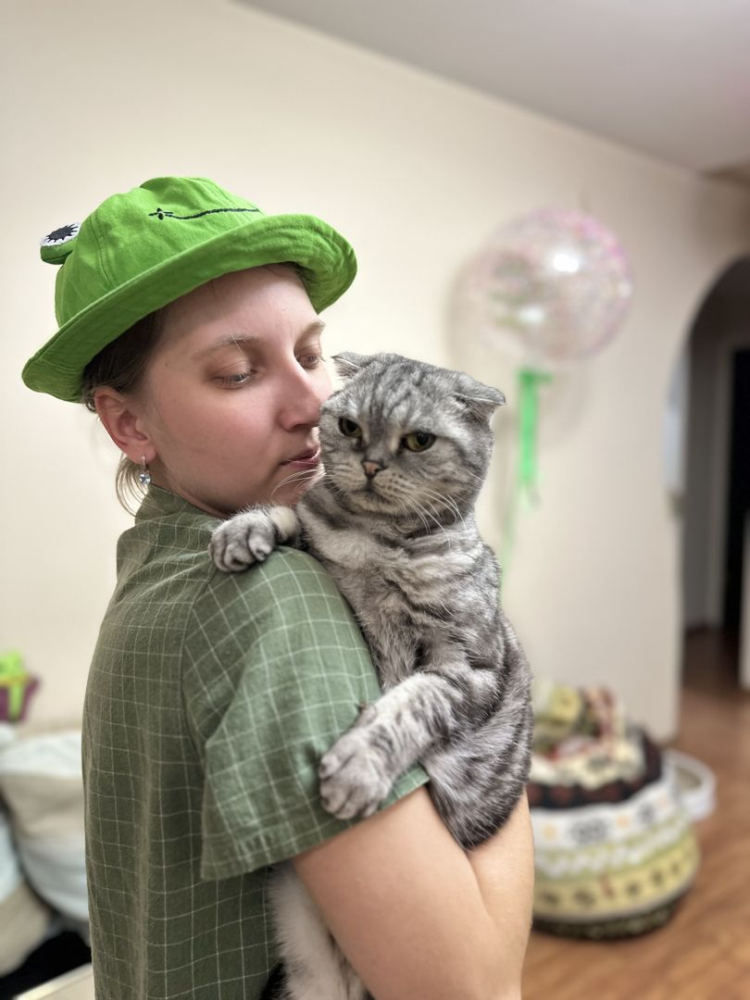
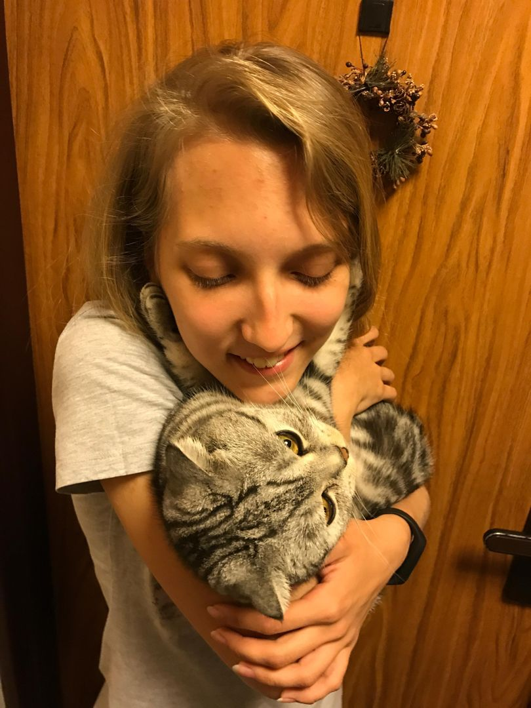
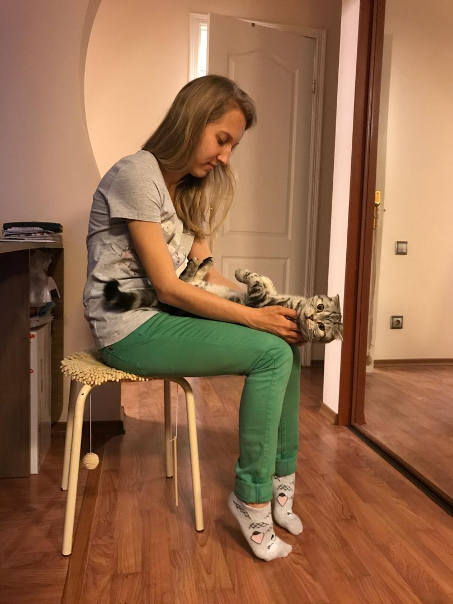
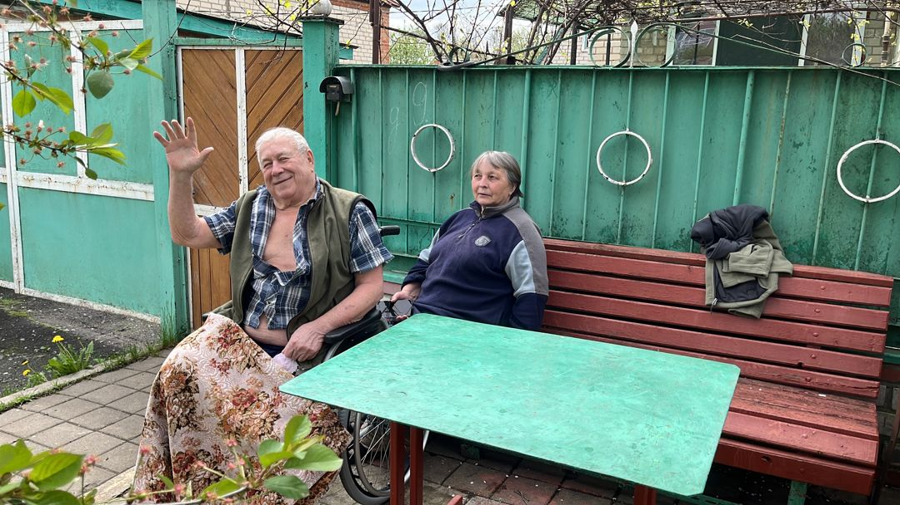

Мы собрали здесь всё, из чего сделана наша девочка: места, где ты была, твои смешные истории, Гошу, любимую еду — и наши слова.
Гоша — скоттиш-фолд с ушками-конвертиками. Сидит на ручках, позирует для фото и точно знает, кто здесь самая любимая.




Обнимают тебя из Белгорода и поздравляют с тридцатилетием.